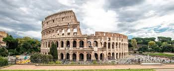
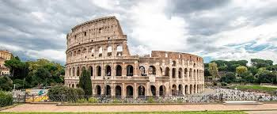

Āzija ir bagāta ar senu vēsturi un iespaidīgu arhitektūru. Viens no slavenākajiem objektiem ir Tadžmahals Indijā – balta marmora mauzolejs, kas simbolizē mīlestību un ir viens no pasaules skaistākajiem celtniecības pieminekļiem.
Amerikā atrodas daudz dabas brīnumu, piemēram, Lielais kanjons (Grand Canyon) ASV. Tas ir milzīgs un dziļš kanjons, ko tūkstošiem gadu veidojusi Kolorado upe, piedāvājot elpu aizraujošus skatus.
Eiropa izceļas ar bagātu kultūras mantojumu. Kolizejs (Colosseum) Romā ir sena romiešu amfiteātra drupas, kur senatnē notika gladiatoru cīņas un publiski pasākumi. Tas ir viens no Eiropas vēstures simboliem.
 
